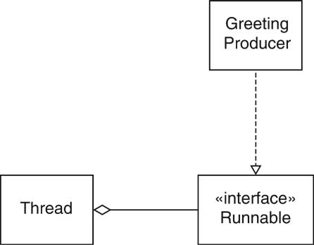
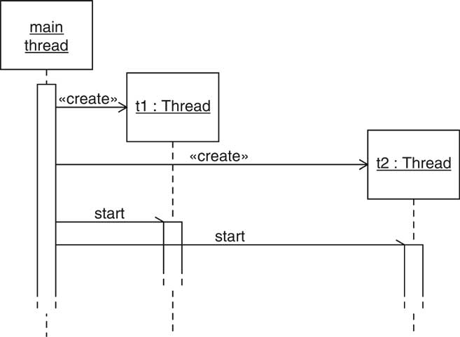
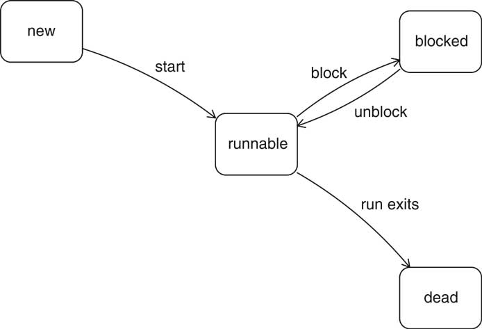
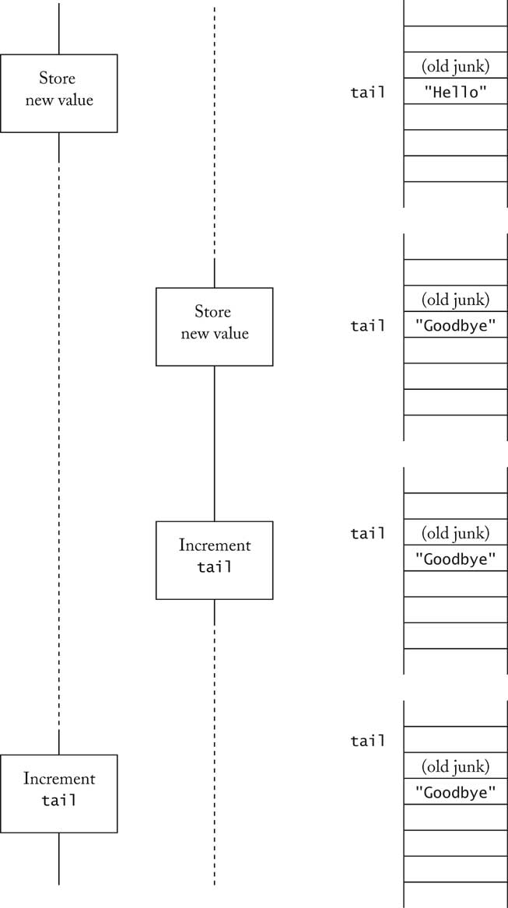
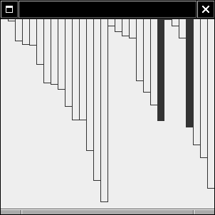

Object-Oriented Design & Patterns
Cay S. Horstmann
Chapter 9
Multithreading

Chapter Topics
- Thread Basics
- Thread Synchronization
- Animations
Threads
- Thread: program unit that is executed independently
- Multiple threads run simultaneously
- Virtual machine executes each thread for short time slice
- Thread scheduler activates, deactivates threads
- Illusion of threads running in parallel
- Multiprocessor computers: threads actually run in parallel
Running Threads
- Define class that implements Runnable
- Runnable has one method
void run()
- Place thread action into run method
- Construct object of runnable class
- Construct thread from that object
- Start thread
Running Threads
public class MyRunnable implements Runnable
{
public void run()
{
thread action
}
}
...
Runnable r = new MyRunnable();
Thread t = new Thread(t);
t.start();
Thread Example
Thread Example

Thread Example
- Note: output not exactly interleaved
1: Hello, World!
1: Goodbye, World!
2: Hello, World!
2: Goodbye, World!
3: Hello, World!
3: Goodbye, World!
4: Hello, World!
4: Goodbye, World!
5: Hello, World!
5: Goodbye, World!
6: Hello, World!
6: Goodbye, World!
7: Hello, World!
7: Goodbye, World!
8: Goodbye, World!
8: Hello, World!
9: Goodbye, World!
9: Hello, World!
10: Goodbye, World!
10: Hello, World!
Starting Two Threads

Thread States
- Each thread has
- Thread states:
- new (before start called)
- dead (after run method exits)
Thread States

Blocked Thread State
- Reasons for blocked state:
- Waiting to acquire lock (later)
- Waiting for condition (later)
- Unblocks only if reason for block goes away
Scheduling Threads
- Scheduler activates new thread if
- a thread has completed its time slice
- a thread has blocked itself
- a thread with higher priority has become runnable
- Scheduler determines new thread to run
- looks only at runnable threads
- picks one with max priority
Terminating Threads
- Thread terminates when run exits
- Sometimes necessary to terminate running thread
- Don't use deprecated stop method
- Interrupt thread by calling interrupt
- Calling t.interrupt() doesn't actually interrupt t;
just sets a flag
- Interrupted thread must sense interruption and exit its run
method
- Interrupted thread has chance to clean up
Sensing Interruptions
- Thread could occasionally call
Thread.currentThread().isInterrupted()
- sleep, wait throw InterruptedException
when thread interrupted
- . . . and then the interruption status is cleared!
- More robust: Sleep occasionally, catch exception and react to
interruption
- Recommendation: Terminate run when sensing interruption
Sensing Interruptions
public class MyRunnable implements Runnable
{
public void run()
{
try
{
while (...)
{
do work
Thread.sleep(...);
}
}
catch (InterruptedException e) {}
clean up
}
}
Thread Synchronization
- Use bounded queue from chapter 3
- Each producer thread inserts greetings
- Each consumer thread removes greetings
- Two producers, one consumer
Producer Thread
int i = 1;
while (i <= greetingCount)
{
if (!queue.isFull())
{
queue.add(i + ": " + greeting);
i++;
}
Thread.sleep((int)(Math.random() * DELAY));
}
Consumer Thread
int i = 1;
while (i <= greetingCount)
{
if (!queue.isEmpty())
{
Object greeting = queue.remove();
System.out.println(greeting);
i++;
}
Thread.sleep((int)(Math.random() * DELAY));
}
Expected Program Output
1: Hello, World!
1: Goodbye, World!
2: Hello, World!
3: Hello, World!
...
99: Goodbye, World!
100: Goodbye, World!
Why is Output Corrupted?
- Sometimes program gets stuck and doesn't complete
- Can see problem better when turning debugging on
queue.setDebug(true);
Race Condition Scenario
- First thread calls add and executes
elements[tail] = anObject;
- First thread at end of time slice
- Second thread calls add and executes
elements[tail] = anObject;
tail++;
- Second thread at end of time slice
- First thread executes
tail++;
Race Condition Scenario

Locks
- Thread can acquire lock
- When another thread tries to acquire same lock, it blocks
- When first thread releases lock, other thread is
unblocked and tries again
- Two kinds of locks
- Objects of class implementing java.util.concurrent.Lock
interface type, usually ReentrantLock
- Locks that are built into every Java object
Reentrant Locks
aLock = new ReentrantLock();
. . .
aLock.lock();
try
{
protected code
}
finally
{
aLock.unlock();
}
Scenario with Locks
- First thread calls add and acquires lock, then executes
elements[tail] = anObject;
- Second thread calls add and tries to acquire lock, but
it is blocked
- First thread executes
tail++;
- First thread completes add, releases lock
- Second thread unblocked
- Second thread acquires lock, starts executing protected code
Deadlocks
Avoiding Deadlocks
- Use condiiton object to manage "space available" condition
private Lock queueLock = new ReentrantLock();
private Condition spaceAvailableCondition
= queueLock.newCondition();
- Call await when condition is not fulfilled:
public void add(E newValue)
{
. . .
while (size == elements.length)
spaceAvailableCondition.await();
. . .
}
Avoiding Deadlocks
Object Locks
Object Locks
Visualizing Locks
- Object = phone booth
- Thread = person
- Locked object = closed booth
- Blocked thread = person waiting for booth to open
Visualizing Locks
Algorithm Animation
- Use thread to make progress in algorithm
- Display algorithm state
- Example: Animate Ch9/animation/Sorter.java
- Sleeps inside compare method
- Pass custom comparator
Comparator<Double> comp = new
Comparator<Double>()
{
public void compare(Double d1, Double d2)
{
sleep
return
comparison result
}
};
Algorithm Animation

Pausing and Running the Animation
- Want to pause animation until "Run" or "Step" button is clicked
- Need to coordinate UI thread, animation thread
- Try to use built-in thread-safe construct in java.util.concurrent
- Trick: Use a blocking queue
- Button click adds string "Run" or "Step" to queue
- Animation thread calls take on the queue, blocks
if no string inserted
- Ch9/animation2/Sorter.java
- Ch9/animation2/AnimationTester.java